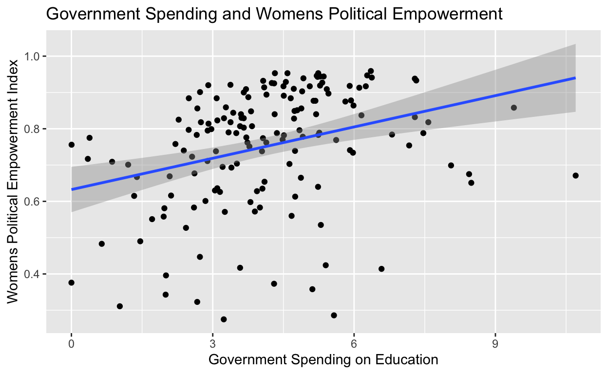

My final project
I am interested in exploring data related to a social issue I care about or policy surrounding it.
For my final project, I will be using the University of Gothenburg’s Quality of Government (QoG) Basic Dataset. My research question is whether government spending on education leads to higher levels of female political empowerment. I hypothesize that countries with higher education spending levels will lead to higher levels of female political empowerment. I theorize this because when a state prioritizes and invests in education, that leads to citizens, especially women, educated and passionate enough to get involved in politics and make their voices heard. Better schools and education shows a commitment to overall social development and improvement, including the empowerment of women in the political spheres. My two variables of interest are government spending on education (wdi_expedu variable in dataset) and the women’s political empowerment index (Vdem_gender in dataset). I will compare countries with high education spendings womens political empowerment indexes to those with medium and low spending to compare. Which countries I will include/not include in my studies will be decided later on in my project timeline. If spending fluctuations align with empowerment indexes I will know my hypothesis is correct. For instance, high spending = high empowerment index, medium spending = medium empowerment index, and low spending = low empowerment index. If there is no clear relationship between these two factors then I know my hypothesis is disproved.
my_data <- read_csv("data/qog_bas_cs_jan26 (1).csv")glimpse(my_data)Rows: 194
Columns: 320
$ ccode <dbl> 4, 8, 12, 20, 24, 28, 31, 32, 36, 40,…
$ ccode_qog <dbl> 4, 8, 12, 20, 24, 28, 31, 32, 36, 40,…
$ ccodealp <chr> "AFG", "ALB", "DZA", "AND", "AGO", "A…
$ ccodecow <dbl> 700, 339, 615, 232, 540, 58, 373, 160…
$ cname <chr> "Afghanistan", "Albania", "Algeria", …
$ cname_qog <chr> "Afghanistan", "Albania", "Algeria", …
$ ajr_settmort <dbl> 4.540098, NA, 4.359270, NA, 5.634789,…
$ bci_bci <dbl> 70.507206, 56.955081, 49.363506, 14.4…
$ bgi_dai <dbl> 36.05418, 68.33896, 44.36240, NA, 50.…
$ bgi_pgpi <dbl> 42.89581, 76.66402, 74.23194, NA, 41.…
$ bgi_sci <dbl> 30.60058, 43.17480, 36.59718, NA, 40.…
$ bicc_gmi <dbl> 69.50792, 72.72038, 179.03727, NA, 12…
$ bmr_dem <dbl> 0, 1, 0, 1, 0, 1, 0, 1, 1, 1, 1, 0, 0…
$ bmr_demdur <dbl> 221, 24, 59, 27, 46, 17, 30, 38, 120,…
$ bti_aar <dbl> 2, 10, 5, NA, 4, NA, 3, 10, NA, NA, N…
$ bti_acp <dbl> 3, 6, 5, NA, 4, NA, 3, 5, NA, NA, NA,…
$ bti_aod <dbl> NA, 8, NA, NA, NA, NA, NA, 7, NA, NA,…
$ bti_cdi <dbl> 1, 9, 2, NA, 3, NA, 2, 7, NA, NA, NA,…
$ bti_ci <dbl> 8, 4, 5, NA, 4, NA, 4, 4, NA, NA, NA,…
$ bti_cps <dbl> 3.5, 8.0, 6.5, NA, 6.5, NA, 7.0, 4.0,…
$ bti_cr <dbl> 1, 8, 5, NA, 4, NA, 3, 7, NA, NA, NA,…
$ bti_ds <dbl> 1.866667, 7.500000, 4.600000, NA, 4.4…
$ bti_eo <dbl> 1, 8, 5, NA, 5, NA, 6, 7, NA, NA, NA,…
$ bti_eos <dbl> 3, 7, 6, NA, 5, NA, 7, 4, NA, NA, NA,…
$ bti_ep <dbl> 3, 7, 6, NA, 5, NA, 7, 4, NA, NA, NA,…
$ bti_ffe <dbl> 1, 8, 4, NA, 4, NA, 2, 9, NA, NA, NA,…
$ bti_foe <dbl> 2, 7, 3, NA, 4, NA, 2, 8, NA, NA, NA,…
$ bti_ij <dbl> 1, 6, 4, NA, 3, NA, 3, 6, NA, NA, NA,…
$ bti_mes <dbl> 2.321429, 7.035714, 5.392857, NA, 4.5…
$ bti_muf <dbl> 6, 10, 9, NA, 8, NA, 8, 8, NA, NA, NA…
$ bti_pdi <dbl> 1, 6, 3, NA, 3, NA, 2, 6, NA, NA, NA,…
$ bti_pp <dbl> 1.50, 8.00, 3.50, NA, 3.50, NA, 2.25,…
$ bti_prp <dbl> 3.0, 7.0, 5.0, NA, 5.0, NA, 4.0, 6.5,…
$ bti_ps <dbl> 1, 6, 4, NA, 5, NA, 2, 6, NA, NA, NA,…
$ bti_rol <dbl> 1.50, 6.25, 4.25, NA, 3.50, NA, 3.00,…
$ bti_sdi <dbl> 1.0, 7.5, 2.5, NA, 3.0, NA, 2.0, 6.5,…
$ bti_seb <dbl> 1, 6, 5, NA, 2, NA, 5, 6, NA, NA, NA,…
$ bti_sel <dbl> 1, 6, 5, NA, 2, NA, 5, 6, NA, NA, NA,…
$ bti_sop <dbl> 1, 6, 4, NA, 3, NA, 2, 6, NA, NA, NA,…
$ bti_ssn <dbl> 2, 7, 7, NA, 4, NA, 5, 6, NA, NA, NA,…
$ bti_su <dbl> 1.5, 6.0, 4.5, NA, 4.0, NA, 5.5, 5.5,…
$ bti_wr <dbl> 1.5, 7.5, 6.0, NA, 4.5, NA, 5.5, 6.5,…
$ cbi_cbiu <dbl> 0.746, 0.733, 0.400, NA, 0.693, 0.633…
$ cbi_cbiw <dbl> 0.808, 0.711, 0.411, NA, 0.713, 0.642…
$ cbie_index <dbl> 0.8700, 0.7910, 0.6435, NA, 0.7320, 0…
$ ccp_cc <dbl> 1, 2, 1, 2, 2, 2, 2, 2, 2, 2, 2, 2, 2…
$ ccp_childwrk <dbl> 1, 1, 1, 2, 1, 2, 2, 2, 2, 2, 2, 1, 2…
$ ccp_equal <dbl> 1, 1, 1, 1, 1, 1, 1, 1, 1, 1, 1, 1, 1…
$ ccp_freerel <dbl> 1, 1, 1, 1, 1, 1, 1, 1, 1, 2, 1, 96, …
$ ccp_slave <dbl> 2, 2, 96, 98, 96, 1, 3, 1, 98, 98, 3,…
$ ccp_strike <dbl> 3, 1, 1, 3, 2, 3, 1, 1, 3, 3, 3, 3, 3…
$ ciri_assn <dbl> 0, 1, 0, 2, 2, 2, 0, 2, 1, 1, 2, 0, 0…
$ ciri_dommov <dbl> 0, 1, 0, 2, 1, 2, 1, 2, 2, 2, 2, 1, 0…
$ ciri_formov <dbl> 1, 2, 0, 2, 1, 2, 1, 2, 2, 2, 2, 1, 1…
$ ciri_injud <dbl> 0, 1, 0, 2, 1, 2, 0, 1, 2, 2, 1, 1, 0…
$ ciri_physint <dbl> 0, 8, 4, 8, 3, 8, 2, 5, 8, 8, 7, 4, 0…
$ ciri_polpris <dbl> 0, 2, 0, 2, 0, 2, 0, 2, 2, 2, 2, 0, 0…
$ ciri_speech <dbl> 0, 1, 0, 2, 1, 2, 0, 1, 2, 2, 2, 1, 1…
$ ciri_tort <dbl> 0, 2, 1, 2, 1, 2, 0, 1, 2, 2, 1, 0, 0…
$ cpds_enps <dbl> NA, NA, NA, NA, NA, NA, NA, NA, 2.730…
$ cpds_enpv <dbl> NA, NA, NA, NA, NA, NA, NA, NA, 4.419…
$ cpds_la <dbl> NA, NA, NA, NA, NA, NA, NA, NA, 6.6, …
$ cpds_lall <dbl> NA, NA, NA, NA, NA, NA, NA, NA, 0, 0,…
$ cpds_lcom <dbl> NA, NA, NA, NA, NA, NA, NA, NA, 0, 0,…
$ cpds_lcon <dbl> NA, NA, NA, NA, NA, NA, NA, NA, 31.8,…
$ cpds_le <dbl> NA, NA, NA, NA, NA, NA, NA, NA, 0, 0,…
$ cpds_lfe <dbl> NA, NA, NA, NA, NA, NA, NA, NA, 0, 0,…
$ cpds_lg <dbl> NA, NA, NA, NA, NA, NA, NA, NA, 2.6, …
$ cpds_ll <dbl> NA, NA, NA, NA, NA, NA, NA, NA, 0.0, …
$ cpds_lls <dbl> NA, NA, NA, NA, NA, NA, NA, NA, 0, 0,…
$ cpds_lmo <dbl> NA, NA, NA, NA, NA, NA, NA, NA, 0, 0,…
$ cpds_lnl <dbl> NA, NA, NA, NA, NA, NA, NA, NA, 0, 0,…
$ cpds_lo <dbl> NA, NA, NA, NA, NA, NA, NA, NA, 8.0, …
$ cpds_lp <dbl> NA, NA, NA, NA, NA, NA, NA, NA, 0, 0,…
$ cpds_lpc <dbl> NA, NA, NA, NA, NA, NA, NA, NA, 0, 0,…
$ cpds_lpen <dbl> NA, NA, NA, NA, NA, NA, NA, NA, 0, 0,…
$ cpds_lper <dbl> NA, NA, NA, NA, NA, NA, NA, NA, 0, 0,…
$ cpds_lr <dbl> NA, NA, NA, NA, NA, NA, NA, NA, 0.0, …
$ cpds_lreg <dbl> NA, NA, NA, NA, NA, NA, NA, NA, 0, 0,…
$ cpds_lrel <dbl> NA, NA, NA, NA, NA, NA, NA, NA, 0.0, …
$ cpds_ls <dbl> NA, NA, NA, NA, NA, NA, NA, NA, 51.0,…
$ cpds_tg <dbl> NA, NA, NA, NA, NA, NA, NA, NA, 1, 2,…
$ cpds_vt <dbl> NA, NA, NA, NA, NA, NA, NA, NA, 89.8,…
$ cri_contr <dbl> NA, NA, NA, NA, NA, NA, NA, NA, NA, 3…
$ cses_pc <dbl> NA, NA, NA, NA, NA, NA, NA, NA, 0.406…
$ cses_sd <dbl> NA, NA, NA, NA, NA, NA, NA, NA, 3.089…
$ dr_eg <dbl> 33.62715, 70.09010, 30.57472, 68.3132…
$ dr_ig <dbl> 32.95072, 65.65904, 52.57700, 54.9077…
$ dr_pg <dbl> 31.36370, 60.45061, 77.17059, 19.8702…
$ dr_sg <dbl> 34.20988, 66.43637, 48.47551, 89.0266…
$ ef_ef <dbl> 0.7508103, 2.1768125, 2.4027996, NA, …
$ egov_egov <dbl> 0.20827, 0.80000, 0.59556, 0.68931, 0…
$ ens_brdep <dbl> NA, 30.0, NA, NA, 15.2, NA, 0.4, NA, …
$ ens_cor <dbl> NA, 43.4, NA, NA, 45.6, NA, 0.0, NA, …
$ epi_eh <dbl> 18.2, 44.1, 48.2, NA, 21.8, 69.6, 40.…
$ epi_epi <dbl> 31.0, 52.2, 41.7, NA, 40.1, 55.6, 40.…
$ ess_happy <dbl> NA, NA, NA, NA, NA, NA, NA, NA, NA, 7…
$ ess_health <dbl> NA, NA, NA, NA, NA, NA, NA, NA, NA, 1…
$ ess_relig <dbl> NA, NA, NA, NA, NA, NA, NA, NA, NA, 4…
$ ess_trlegal <dbl> NA, NA, NA, NA, NA, NA, NA, NA, NA, 6…
$ ess_trparl <dbl> NA, NA, NA, NA, NA, NA, NA, NA, NA, 4…
$ ess_trpart <dbl> NA, NA, NA, NA, NA, NA, NA, NA, NA, 2…
$ ess_trpeople <dbl> NA, NA, NA, NA, NA, NA, NA, NA, NA, 4…
$ ess_trpolice <dbl> NA, NA, NA, NA, NA, NA, NA, NA, NA, 6…
$ ess_trpolit <dbl> NA, NA, NA, NA, NA, NA, NA, NA, NA, 3…
$ fh_aor <dbl> 3, 8, 3, 11, 3, 10, 1, 11, 12, 12, 12…
$ fh_cl <dbl> 7, 3, 5, 1, 5, 2, 7, 2, 1, 1, 1, 6, 5…
$ fh_ep <dbl> 0, 9, 3, 12, 3, 12, 0, 11, 12, 12, 12…
$ fh_feb <dbl> 2, 13, 6, 14, 7, 15, 2, 15, 15, 14, 1…
$ fh_fog <dbl> 1, 7, 3, 11, 2, 8, 0, 8, 11, 10, 10, …
$ fh_pair <dbl> 2, 9, 7, 15, 3, 13, 4, 14, 15, 15, 13…
$ fh_pr <dbl> 7, 3, 6, 1, 6, 2, 7, 2, 1, 1, 1, 7, 5…
$ fh_rol <dbl> 0, 9, 6, 15, 5, 14, 0, 10, 15, 15, 13…
$ fh_status <dbl> 3, 2, 3, 1, 3, 1, 3, 1, 1, 1, 1, 3, 2…
$ fhn_fotnsc <dbl> NA, NA, NA, NA, 59, NA, 37, 73, 76, N…
$ fhn_fotnst <dbl> NA, NA, NA, NA, 2, NA, 3, 1, 1, NA, N…
$ fi_ftradeint <dbl> NA, 8.527913, 3.137295, NA, 2.969500,…
$ fi_index <dbl> NA, 7.48, 4.46, NA, 4.79, NA, 5.80, 4…
$ gd_ptsa <dbl> 5, 1, 3, 1, 3, NA, 4, 2, 1, 1, NA, 3,…
$ gd_ptsh <dbl> 5, NA, 3, NA, 3, NA, 4, 3, 1, NA, NA,…
$ gdg_total <dbl> NA, 30.555556, 3.333333, NA, NA, NA, …
$ gfs_rcr <dbl> NA, 0.4991271, NA, 1.7598091, NA, NA,…
$ gol_enep <dbl> NA, 2.944034, NA, 4.017048, NA, 2.033…
$ gol_est <dbl> NA, 2, NA, 3, NA, 1, NA, 2, 1, 2, 1, …
$ gol_est_spec <dbl> NA, 9, NA, 12, NA, 1, NA, 9, 3, 9, 1,…
$ gol_pr <dbl> NA, 25, NA, 9, NA, 1, NA, 25, 5, 12, …
$ gpi_gpi <dbl> 3.543, 1.764, 2.028, NA, 1.936, NA, 2…
$ ht_colonial <dbl> 0, 0, 6, 0, 7, 5, 0, 2, 0, 0, 5, 5, 5…
$ ht_region <dbl> 8, 1, 3, 5, 4, 10, 1, 2, 5, 5, 10, 3,…
$ ibp_obi <dbl> 0.00000, 57.47706, 14.67890, NA, 25.9…
$ icrg_qog <dbl> NA, 0.4421296, 0.4340278, NA, 0.41898…
$ ideavt_legvt <dbl> NA, 46.32, 23.03, 66.93, 44.82, 70.34…
$ ideavt_presvt <dbl> 19.00, NA, 46.10, NA, NA, NA, 76.68, …
$ iiag_be <dbl> NA, NA, 43.2, NA, 32.7, NA, NA, NA, N…
$ iiag_edu <dbl> NA, NA, 62.9, NA, 28.8, NA, NA, NA, N…
$ iiag_gov <dbl> NA, NA, 55.5, NA, 43.3, NA, NA, NA, N…
$ iiag_hd <dbl> NA, NA, 70.9, NA, 40.0, NA, NA, NA, N…
$ iiag_he <dbl> NA, NA, 76.0, NA, 48.6, NA, NA, NA, N…
$ iiag_inf <dbl> NA, NA, 66.7, NA, 37.6, NA, NA, NA, N…
$ iiag_srol <dbl> NA, NA, 50.6, NA, 43.6, NA, NA, NA, N…
$ ipu_l_sw <dbl> 27.0, 35.7, 8.1, 46.4, 39.1, 11.1, 18…
$ ipu_u_sw <dbl> 27.9, NA, 4.3, NA, NA, 52.9, NA, 43.1…
$ lis_gini <dbl> NA, NA, NA, NA, NA, NA, NA, NA, 0.325…
$ mad_gdppc <dbl> 1357.988, 12978.101, 13506.444, NA, 6…
$ mad_gdppc1900 <dbl> NA, 1092, NA, NA, NA, NA, NA, 4583, 6…
$ nelda_mbbe <dbl> 0, NA, 1, 0, NA, NA, 1, 0, 1, 0, NA, …
$ nelda_mtop <dbl> 1, NA, 1, 1, NA, NA, 1, 99, 1, 1, NA,…
$ nelda_oa <dbl> 1, NA, 1, 1, NA, NA, 1, 99, 1, 1, NA,…
$ nelda_rpae <dbl> 1, NA, 1, 0, NA, NA, 1, 0, 0, 0, NA, …
$ ohi_ohi <dbl> NA, 71.19, 65.48, NA, 59.41, 79.00, N…
$ pwt_hci <dbl> NA, 3.011242, 2.480429, NA, 1.525651,…
$ pwt_pop <dbl> NA, 2.827608, 45.477389, NA, 35.63502…
$ rd_inw <dbl> 320000000, 1745245136, 1704708319, 44…
$ rd_outw <dbl> 225420606, 149489653, 77927357, 12388…
$ rsf_pfi <dbl> 38.27, 56.41, 45.53, 68.79, 57.17, NA…
$ sgi_ec <dbl> NA, NA, NA, NA, NA, NA, NA, NA, 6.020…
$ sgi_ecbg <dbl> NA, NA, NA, NA, NA, NA, NA, NA, 5.472…
$ sgi_ecec <dbl> NA, NA, NA, NA, NA, NA, NA, NA, 6.153…
$ sgi_eclm <dbl> NA, NA, NA, NA, NA, NA, NA, NA, 7.092…
$ sgi_ectx <dbl> NA, NA, NA, NA, NA, NA, NA, NA, 5.764…
$ sgi_en <dbl> NA, NA, NA, NA, NA, NA, NA, NA, 4.727…
$ sgi_enen <dbl> NA, NA, NA, NA, NA, NA, NA, NA, 4.721…
$ sgi_enge <dbl> NA, NA, NA, NA, NA, NA, NA, NA, 4.732…
$ sgi_qd <dbl> NA, NA, NA, NA, NA, NA, NA, NA, 7.300…
$ sgi_qdep <dbl> NA, NA, NA, NA, NA, NA, NA, NA, 8.2, …
$ sgi_so <dbl> NA, NA, NA, NA, NA, NA, NA, NA, 6.444…
$ sgi_soed <dbl> NA, NA, NA, NA, NA, NA, NA, NA, 6.416…
$ sgi_sofa <dbl> NA, NA, NA, NA, NA, NA, NA, NA, 6.726…
$ sgi_sogi <dbl> NA, NA, NA, NA, NA, NA, NA, NA, 4.637…
$ sgi_sohe <dbl> NA, NA, NA, NA, NA, NA, NA, NA, 6.624…
$ sgi_soin <dbl> NA, NA, NA, NA, NA, NA, NA, NA, 7.955…
$ sgi_sope <dbl> NA, NA, NA, NA, NA, NA, NA, NA, 6.361…
$ sgi_sosi <dbl> NA, NA, NA, NA, NA, NA, NA, NA, 5.439…
$ sgi_sosl <dbl> NA, NA, NA, NA, NA, NA, NA, NA, 7.391…
$ ti_cpi <dbl> 24, 36, 33, NA, 33, NA, 23, 38, 75, 7…
$ top_top10_income_share <dbl> 0.3994, 0.3464, 0.4873, 0.3567, 0.577…
$ top_top1_income_share <dbl> 0.1469, 0.0928, 0.2261, 0.1150, 0.258…
$ undp_hdi <dbl> 0.495, 0.806, 0.761, 0.893, 0.615, 0.…
$ vdem_corr <dbl> 0.567, 0.558, 0.670, NA, 0.564, NA, 0…
$ vdem_delibdem <dbl> 0.034, 0.298, 0.178, NA, 0.150, NA, 0…
$ vdem_egaldem <dbl> 0.020, 0.390, 0.255, NA, 0.132, NA, 0…
$ vdem_gender <dbl> 0.025, 0.901, 0.613, NA, 0.740, NA, 0…
$ vdem_libdem <dbl> 0.012, 0.433, 0.115, NA, 0.154, NA, 0…
$ vdem_mecorrpt <dbl> 1.468, 2.051, 2.572, NA, 1.146, NA, 0…
$ vdem_partipdem <dbl> 0.011, 0.322, 0.102, NA, 0.098, NA, 0…
$ vdem_polyarchy <dbl> 0.076, 0.520, 0.267, NA, 0.327, NA, 0…
$ vdem_regimeamb <dbl> 0, 5, 3, NA, 3, NA, 3, 6, 9, 7, NA, 0…
$ wbgi_cce <dbl> -1.1719937, -0.5004560, -0.6430769, 1…
$ wbgi_gee <dbl> -1.9646115, 0.1929668, -0.2671351, 1.…
$ wbgi_pve <dbl> -2.4492487, 0.0115425, -0.8074555, 1.…
$ wbgi_rle <dbl> -1.8586889, -0.1309656, -0.7983850, 1…
$ wdi_acel <dbl> 85.3, 100.0, 100.0, 100.0, 48.5, 100.…
$ wdi_acelr <dbl> 81.7, 100.0, 99.3, 100.0, NA, 100.0, …
$ wdi_acelu <dbl> 95.9, 100.0, 100.0, 100.0, 76.2, 100.…
$ wdi_afp <dbl> 1.8210895, 0.6639180, 2.7060865, NA, …
$ wdi_agedr <dbl> 84.96249, 49.25105, 58.80113, 38.1687…
$ wdi_ane <dbl> NA, 28.45, 0.09, NA, 6.55, NA, 0.86, …
$ wdi_araland <dbl> 11.9743035, 21.8284672, 3.1619740, 1.…
$ wdi_area <dbl> 652230.00, 27400.00, 2381740.00, 470.…
$ wdi_armexp <dbl> NA, NA, NA, NA, NA, NA, NA, NA, 1.90e…
$ wdi_armimp <dbl> 6.50e+07, 1.00e+06, 4.18e+08, NA, 4.6…
$ wdi_birth <dbl> 36.045, 10.305, 20.491, 6.850, 38.102…
$ wdi_broadb <dbl> 0.0796302, 20.6989000, 10.3517000, 51…
$ wdi_busden <dbl> NA, 1.8041193, 0.6318988, NA, 1.25203…
$ wdi_co2 <dbl> 0.2784210, 1.8452576, 4.1600585, NA, …
$ wdi_death <dbl> 5.993, 8.709, 4.602, 5.948, 7.097, 6.…
$ wdi_debt <dbl> NA, 81.92023, NA, NA, NA, NA, NA, NA,…
$ wdi_eduprp <dbl> 7.29868, 10.46711, 1.48208, 4.68407, …
$ wdi_eduprs <dbl> NA, 10.82496, 1.35591, 4.25184, 33.51…
$ wdi_elerenew <dbl> 78.23447461, NA, 0.91358473, 93.34039…
$ wdi_elprodcoal <dbl> 0.000000, 0.000000, 0.000000, 0.00000…
$ wdi_elprodgas <dbl> 0.00000000, 0.00000000, 99.01458934, …
$ wdi_elprodhyd <dbl> 71.6561827, 97.7006570, 0.0175379, 75…
$ wdi_elprodnuc <dbl> 0.000000, 0.000000, 0.000000, 0.00000…
$ wdi_elprodoil <dbl> 21.765525394, 0.000000000, 0.23785774…
$ wdi_emp <dbl> 1.4546359, 3.9811373, 4.6354304, NA, …
$ wdi_empagr <dbl> 45.5926541, 35.3568585, 9.5358778, NA…
$ wdi_empagrf <dbl> 47.84623622, 40.47981220, 3.25498133,…
$ wdi_empagrm <dbl> 45.4525301, 31.1908346, 10.6278698, N…
$ wdi_empind <dbl> 18.540741, 21.008240, 30.741928, NA, …
$ wdi_empindf <dbl> 33.937935, 16.520783, 23.019375, NA, …
$ wdi_empindm <dbl> 17.58345, 24.65747, 32.08458, NA, 10.…
$ wdi_empser <dbl> 35.86662, 43.63482, 59.72220, NA, 38.…
$ wdi_empserf <dbl> 18.21560, 42.99941, 73.72558, NA, 38.…
$ wdi_empserm <dbl> 36.96402, 44.15155, 57.28754, NA, 37.…
$ wdi_eneimp <dbl> NA, 32.276397, -127.243587, NA, -353.…
$ wdi_expedu <dbl> NA, 2.729770, 4.749247, 2.647280, 2.3…
$ wdi_expeduge <dbl> NA, 9.014090, 13.101507, 6.961290, 6.…
$ wdi_expmil <dbl> 1.8279339, 1.2087886, 4.0574881, NA, …
$ wdi_fdiin <dbl> 0.00000000, 7.57934043, 0.10718781, 1…
$ wdi_fdiout <dbl> 0.000000000, 1.007041997, 0.037496952…
$ wdi_fertility <dbl> 4.932, 1.355, 2.817, 1.071, 5.209, 1.…
$ wdi_firftopm <dbl> NA, 18.059038, NA, NA, 10.368526, NA,…
$ wdi_firgifttax <dbl> NA, 34.5734482, NA, NA, 12.3425064, N…
$ wdi_forest <dbl> 1.8527820, 28.7919708, 0.8262867, 34.…
$ wdi_fossil <dbl> NA, 0, 0, NA, 0, NA, 0, 0, 0, 0, NA, …
$ wdi_gdpagr <dbl> 33.7014323, 16.9844754, 10.6470639, 0…
$ wdi_gdpcapcon2015 <dbl> 377.6656, 5867.6510, 4544.4669, 39780…
$ wdi_gdpind <dbl> 16.050368, 23.025052, 43.052131, 11.1…
$ wdi_gerp <dbl> 109.07531, 96.37123, 105.74715, 90.46…
$ wdi_gerpp <dbl> NA, 69.23420, NA, NA, NA, NA, 46.2895…
$ wdi_gers <dbl> NA, 97.32247, 104.55027, 98.50987, 51…
$ wdi_gert <dbl> 10.85436, 62.64792, 53.38758, 34.6414…
$ wdi_gini <dbl> NA, 29.4, NA, NA, NA, NA, NA, 40.7, 3…
$ wdi_homicides <dbl> 4.0324585, 1.6975479, 1.7481214, 2.58…
$ wdi_idpdis <dbl> 220000, 320, 2000, NA, 1800, 300, 190…
$ wdi_idpvc <dbl> 32000, NA, NA, NA, NA, NA, 5100, NA, …
$ wdi_imig <dbl> 0.2, 1.7, 0.6, 59.1, 1.8, 32.5, 2.1, …
$ wdi_infpay <dbl> NA, 31.5799828, NA, NA, 19.1214046, N…
$ wdi_internet <dbl> 17.1917, 82.6137, 74.8319, 94.4855, 4…
$ wdi_lfpf <dbl> 6.86395, 44.98380, 16.67177, NA, 49.5…
$ wdi_lifexp <dbl> 65.61700, 78.76900, 76.12900, 84.0160…
$ wdi_lifexpf <dbl> 67.236, 80.781, 77.592, 86.075, 66.75…
$ wdi_lifexpm <dbl> 63.941, 76.751, 74.740, 82.083, 61.74…
$ wdi_litrad <dbl> 37.27000, 97.68000, NA, NA, NA, NA, 9…
$ wdi_litradf <dbl> 26.60000, 97.22000, 74.21000, NA, NA,…
$ wdi_litradm <dbl> 52.06000, 98.15000, NA, NA, NA, NA, 9…
$ wdi_litry <dbl> 62.66, 99.06, NA, NA, NA, NA, 99.88, …
$ wdi_migration <dbl> -647402, -16426, -14684, 1102, -995, …
$ wdi_pop <dbl> 40578842, 2451636, 45477389, 79705, 3…
$ wdi_pop14 <dbl> 43.57984, 17.22247, 30.84119, 12.6560…
$ wdi_pop1564 <dbl> 54.06502, 67.00119, 62.97184, 72.3750…
$ wdi_pop65 <dbl> 2.355142, 15.776338, 6.186964, 14.968…
$ wdi_popden <dbl> 62.215541, 89.475766, 19.094187, 169.…
$ wdi_poprul <dbl> 74.606075, 42.135652, 25.820414, 11.2…
$ wdi_popurb <dbl> 25.39393, 57.86435, 74.17959, 88.7548…
$ wdi_region <dbl> 4, 2, 4, 2, 7, 3, 2, 3, 1, 2, 3, 4, 6…
$ wdi_semp <dbl> 82.200849, 52.960103, 32.050304, NA, …
$ wdi_smokf <dbl> 6.8, 6.0, 0.7, 37.9, NA, NA, 0.1, 19.…
$ wdi_smokm <dbl> 38.7, 37.8, 41.8, 34.8, NA, NA, 39.0,…
$ wdi_spr <dbl> 1.5, NA, NA, NA, NA, NA, NA, NA, NA, …
$ wdi_tacpsr <dbl> 1.0, NA, NA, NA, NA, NA, NA, NA, NA, …
$ wdi_taxrev <dbl> NA, 18.060776, NA, 14.984598, 12.7318…
$ wdi_tele <dbl> 0.400, 6.270, 12.300, 63.800, 0.264, …
$ wdi_trade <dbl> 72.88547, 84.69804, 51.19009, NA, 55.…
$ wdi_unempfilo <dbl> 26.742, 10.405, 22.126, NA, 14.736, N…
$ wdi_unempilo <dbl> 14.100, 10.137, 12.346, NA, 14.602, N…
$ wdi_unempmilo <dbl> 13.168, 9.917, 10.390, NA, 14.472, NA…
$ wdi_unempyfilo <dbl> 30.061, 27.087, 47.719, NA, 25.638, N…
$ wdi_unempyilo <dbl> 17.365, 24.735, 31.662, NA, 28.288, N…
$ wdi_unempymilo <dbl> 16.289, 23.247, 28.696, NA, 30.903, N…
$ wdi_wip <dbl> 27.016129, 35.714286, 8.108108, 46.42…
$ who_halet <dbl> 50.44624, 66.68796, 65.54819, NA, 53.…
$ who_sanittot <dbl> NA, 56.34649, 62.41010, 100.00000, NA…
$ wjp_abs_cor <dbl> 0.3073073, 0.3633124, 0.4454944, NA, …
$ wjp_civ_just <dbl> 0.3368638, 0.4567246, 0.5518958, NA, …
$ wjp_cj_cor <dbl> 0.1945196, 0.2804888, 0.6108937, NA, …
$ wjp_crim_jus <dbl> 0.2607673, 0.4000207, 0.3972825, NA, …
$ wjp_crsys_cor <dbl> 0.2695896, 0.3337139, 0.4195765, NA, …
$ wjp_exec_br <dbl> 0.3569092, 0.3878701, 0.3903812, NA, …
$ wjp_gov_pow <dbl> 0.3940178, 0.4307076, 0.4700801, NA, …
$ wjp_jud_br <dbl> 0.1982896, 0.3327888, 0.5504890, NA, …
$ wjp_leg_br <dbl> 0.24865021, 0.20956291, 0.38127259, N…
$ wjp_ord_secur <dbl> 0.2979887, 0.7796684, 0.7548524, NA, …
$ wjp_pol_mil <dbl> 0.4253800, 0.5230277, 0.4598350, NA, …
$ wvs_confaf <dbl> NA, NA, NA, NA, NA, NA, NA, NA, NA, N…
$ wvs_confch <dbl> NA, NA, NA, NA, NA, NA, NA, NA, NA, N…
$ wvs_confcs <dbl> NA, NA, NA, NA, NA, NA, NA, NA, NA, N…
$ wvs_confgov <dbl> NA, NA, NA, NA, NA, NA, NA, NA, NA, N…
$ wvs_confjs <dbl> NA, NA, NA, NA, NA, NA, NA, NA, NA, N…
$ wvs_conflu <dbl> NA, NA, NA, NA, NA, NA, NA, NA, NA, N…
$ wvs_confpar <dbl> NA, NA, NA, NA, NA, NA, NA, NA, NA, N…
$ wvs_confpol <dbl> NA, NA, NA, NA, NA, NA, NA, NA, NA, N…
$ wvs_confpp <dbl> NA, NA, NA, NA, NA, NA, NA, NA, NA, N…
$ wvs_confpr <dbl> NA, NA, NA, NA, NA, NA, NA, NA, NA, N…
$ wvs_conftv <dbl> NA, NA, NA, NA, NA, NA, NA, NA, NA, N…
$ wvs_demimp <dbl> NA, NA, NA, NA, NA, NA, NA, NA, NA, N…
$ wvs_democ <dbl> NA, NA, NA, NA, NA, NA, NA, NA, NA, N…
$ wvs_godbel <dbl> NA, NA, NA, NA, NA, NA, NA, NA, NA, N…
$ wvs_hap <dbl> NA, NA, NA, NA, NA, NA, NA, NA, NA, N…
$ wvs_imprel <dbl> NA, NA, NA, NA, NA, NA, NA, NA, NA, N…
$ wvs_pmi12 <dbl> NA, NA, NA, NA, NA, NA, NA, NA, NA, N…
$ wvs_psarmy <dbl> NA, NA, NA, NA, NA, NA, NA, NA, NA, N…
$ wvs_psdem <dbl> NA, NA, NA, NA, NA, NA, NA, NA, NA, N…
$ wvs_psexp <dbl> NA, NA, NA, NA, NA, NA, NA, NA, NA, N…
$ wvs_pssl <dbl> NA, NA, NA, NA, NA, NA, NA, NA, NA, N…
$ wvs_relacc <dbl> NA, NA, NA, NA, NA, NA, NA, NA, NA, N…
$ wvs_satfin <dbl> NA, NA, NA, NA, NA, NA, NA, NA, NA, N…
$ wvs_subh <dbl> NA, NA, NA, NA, NA, NA, NA, NA, NA, N…
$ wvs_trust <dbl> NA, NA, NA, NA, NA, NA, NA, NA, NA, N…# A tibble: 156 × 3
cname wdi_expedu vdem_gender
<chr> <dbl> <dbl>
1 Albania 2.73 0.901
2 Algeria 4.75 0.613
3 Angola 2.39 0.74
4 Azerbaijan 3.05 0.63
5 Argentina 4.79 0.851
6 Australia 5.06 0.917
7 Austria 5.28 0.919
8 Bahrain 1.71 0.551
9 Bangladesh 2.09 0.669
10 Armenia 2.49 0.884
# ℹ 146 more rows ggplot(data = plotting_data) +
aes(x = wdi_expedu, y = vdem_gender) +
geom_point() + geom_smooth(method = "lm") +
labs(x = "Government Spending on Education",
y = "Womens Political Empowerment Index",
title = "Government Spending and Womens Political Empowerment",
source = "University of Gothenburg, 2026")